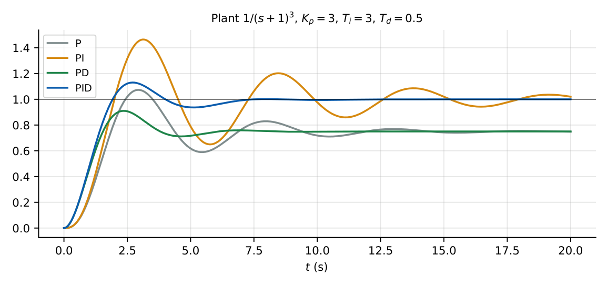

Controllers
In this chapter
Transfer functions of P, PI, PD, PID; effect of each action on type, steady-state error, damping and stability; Ziegler–Nichols tuning. Mostly 1-mark conceptual plus small 2-mark calculations.
17.1 Core concept
A controller processes the error \(e(t)=r-c\) to produce the actuating signal \(u(t)\) that drives the plant. It is placed in the forward path (Figure below), before the plant.
17.2 Standard controllers
P: \(G_c=K_p\). I: \(G_c=\dfrac{K_i}{s}\). D: \(G_c=K_ds\).
PI: \(G_c=K_p\!\left(1+\dfrac1{T_is}\right)=\dfrac{K_p(s+1/T_i)}{s}\). PD: \(G_c=K_p(1+T_ds)\).
PID: \(G_c=K_p\!\left(1+\dfrac1{T_is}+T_ds\right)=\dfrac{K_ds^2+K_ps+K_i}{s}\), with \(K_i=K_p/T_i\), \(K_d=K_pT_d\).
A PID adds one pole at the origin and two zeros.
17.3 Effect of each action
1.25
| Action | Rise time | Overshoot | Settling time | Steady-state error |
|---|---|---|---|---|
| \(K_p\uparrow\) | decreases | increases | small change | decreases (not zero) |
| \(K_i\uparrow\) | decreases | increases | increases | eliminates |
| \(K_d\uparrow\) | small change | decreases | decreases | no effect |
- P: speeds up the response; only reduces the error; high gain reduces stability.
- I (in PI): raises the system type by one, so removes the step (or ramp) error; but adds phase lag (\(-90^\circ\)), lowers stability margin, slows the response. Acts on the accumulated error.
- D (in PD): adds phase lead (\(+90^\circ\)) proportional to the rate of change; increases damping and stability, reduces overshoot; amplifies high-frequency noise; does not change \(K_p\), \(K_v\); useless for constant error.
- PID: combines: integral for accuracy, derivative for damping.

17.4 Effect on steady-state error and type
Plant \(G=\dfrac{2}{s+3}\) (type 0). With P: \(K_p=\dfrac{2K_p'}{3}\), finite step error \(\dfrac1{1+2K_p'/3}\). With PI: \(G_cG=\dfrac{2K_p(s+1/T_i)}{s(s+3)}\), type 1: zero step error, ramp error \(\dfrac1{K_v}\) with \(K_v=\dfrac{2K_p}{3T_i}\).
\(G=\dfrac{1}{s(s+1)}\) with unity feedback: \(\zeta=0.5\), \(\omega_n=1\). Add PD \((1+0.5s)\): closed loop \(\dfrac{1+0.5s}{s^2+1.5s+1}\); \(\omega_n=1\) (denominator) and \(\zeta=0.75\): overshoot of the denominator dynamics falls, though the zero adds some back. \(K_v=1\) unchanged.
17.5 PID transfer function and design
With \(G_c(s)=\dfrac{K_p(T_iT_ds^2+T_is+1)}{T_is}\), the two zeros are placed to cancel plant poles or to shape the locus. If \(T_i=4T_d\) the zeros coincide at \(s=-1/(2T_d)\).
17.6 Ziegler–Nichols tuning
| Ultimate-gain method (\(K_u\) = gain at sustained oscillation, \(P_u\) = its period) | |||
|---|---|---|---|
| Controller | \(K_p\) | \(T_i\) | \(T_d\) |
| P | \(0.5K_u\) | \(\infty\) | 0 |
| PI | \(0.45K_u\) | \(P_u/1.2\) | 0 |
| PID | \(0.6K_u\) | \(P_u/2\) | \(P_u/8\) |
| Reaction-curve method (plant \(\approx\dfrac{Ke^{-Ls}}{Ts+1}\)) | |||
|---|---|---|---|
| Controller | \(K_p\) | \(T_i\) | \(T_d\) |
| P | \(\dfrac{T}{KL}\) | \(\infty\) | 0 |
| PI | \(\dfrac{0.9T}{KL}\) | \(3.33L\) | 0 |
| PID | \(\dfrac{1.2T}{KL}\) | \(2L\) | \(0.5L\) |
\(G=\dfrac{K}{s(s+2)(s+4)}\): \(K_u=48\) at \(\omega=2.83\) (Chapter 12), \(P_u=\dfrac{2\pi}{2.83}=2.22\) s. PID: \(K_p=28.8\), \(T_i=1.11\) s, \(T_d=0.277\) s.
17.7 Practical implementation
Pure derivative is noise-sensitive and improper; use \(\dfrac{K_pT_ds}{1+T_ds/N}\) (\(N\approx5\)–\(20\)). Integral windup during actuator saturation is avoided with anti-windup. Derivative on measurement (not on error) avoids “kick” at set-point changes.
Type change: P keeps type; PI/PID add \(+1\); PD keeps type. To remove ramp error use a PI on a type-1 plant. For fast transient with a stable but sluggish plant use PD; for accuracy use PI; for both, PID.
(i) PD does not reduce steady-state error of the step response beyond the effect of \(K_p\). (ii) Adding an integrator improves accuracy but can destabilise; check stability. (iii) Z–N rules are heuristics with \(25\%\) overshoot typically, not exact. (iv) \(K_d\) has units of \(T_d\times K_p\).
Q1. An integral controller (A) increases the system type by 1 (B) reduces overshoot (C) improves phase margin (D) speeds up the response.
Q2. The derivative action improves (A) steady-state error (B) damping (C) type (D) DC gain.
Q3. PI controller \(K_p(1+1/T_is)\) adds (A) one zero and one pole at origin (B) two poles (C) two zeros (D) one zero only.
Answers: Q1 (A). Q2 (B). Q3 (A).
Q4. Plant \(G=\dfrac{1}{s+1}\) under unity feedback with PI \(K_p(1+1/s)\), \(K_p=4\): the steady-state error for a unit ramp is (A) 0 (B) \(0.25\) (C) \(1\) (D) \(4\).
Q5. A ZN ultimate-gain test gives \(K_u=10\), \(P_u=2\) s. PID parameters: (A) \(6,\ 1,\ 0.25\) (B) \(5,\ 1,\ 0.25\) (C) \(6,\ 2,\ 0.5\) (D) \(4.5,\ 1.67,\ 0\).
Answers: Q4 (B): \(G_cG=\dfrac{4(s+1)}{s(s+1)}=\dfrac4s\), \(K_v=4\), \(e=0.25\). Q5 (A): \(0.6\cdot10=6\), \(P_u/2=1\), \(P_u/8=0.25\).
Q6. PID with \(K_p=2\), \(T_i=0.5\) s, \(T_d=0.1\) s: \(K_i=\) and \(K_d=\) .
Q7. PD controller \((1+0.2s)\) on \(G=\dfrac{K}{s(s+1)}\), unity feedback, \(K=4\): the closed-loop \(\zeta\) (denominator) is (two decimals).
Answers: Q6: \(K_i=K_p/T_i=4\), \(K_d=K_pT_d=0.2\). Q7: \(s^2+s+4(1+0.2s)=s^2+1.8s+4\): \(\omega_n=2\), \(\zeta=0.45\).
Q8. Which are correct? (A) PI improves steady-state accuracy (B) PD improves transient response (C) PID cannot remove error (D) derivative amplifies noise.
Answers: Q8: (A), (B), (D).
\(G=\dfrac{1}{s^2}\) unity-feedback loop is marginally stable; adding PD \((1+T_ds)\) gives \(s^2+T_ds+1\), so \(\zeta=T_d/2\): with \(T_d=1.4\), \(\zeta=0.7\). Derivative action supplies the damping the double integrator lacks.
T1. Write the PID transfer function in terms of \(K_p,K_i,K_d\) and count its poles/zeros.
T2. Why does PI improve accuracy but can reduce stability?
Answers: T1: \(\dfrac{K_ds^2+K_ps+K_i}{s}\): one pole at \(0\), two zeros. T2: raises type (accuracy) but adds a pole at origin and \(-90^\circ\) phase lag.
- P: \(K_p\); PI: \(K_p(1+1/T_is)\); PD: \(K_p(1+T_ds)\); PID: \(K_p(1+1/T_is+T_ds)\).
- I raises type, removes error, lowers stability; D adds damping, amplifies noise; P speeds up.
- ZN (ultimate): PID \(K_p=0.6K_u\), \(T_i=P_u/2\), \(T_d=P_u/8\).
- Practical: filter derivative, anti-windup.